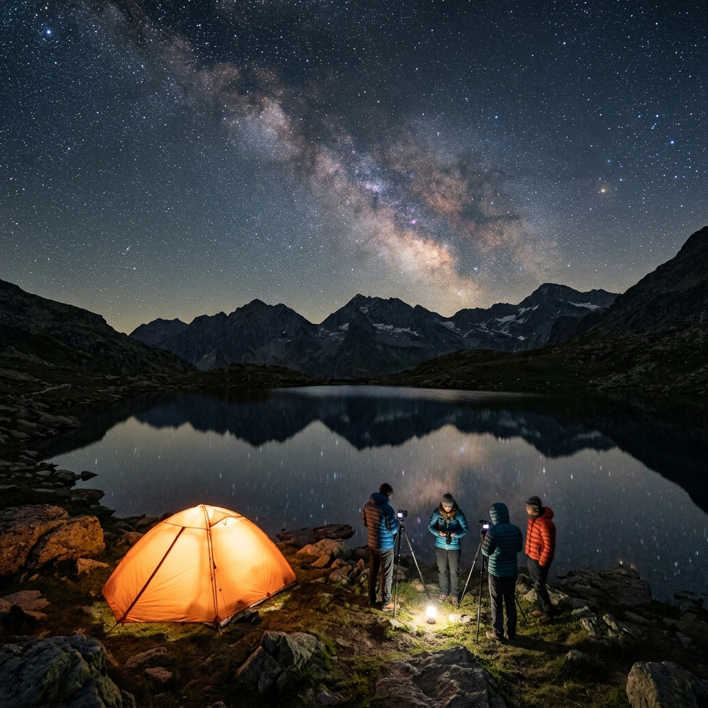

Esperienze fotografiche immersive in location straordinarie, viaggi guidati e corsi di formazione One-to-One. Dalla pianificazione sul campo alla stampa Fine Art.
Piccoli gruppi, location selezionate per alba, tramonto e notte, con supporto didattico continuo e pianificazione approfondita.

Ultimi 2 PostiCo-hosted con Loris Ferrini. Una notte sotto il cielo stellato a 2.500m di quota, sessioni sul campo di astrofotografia ambientata, pernottamento e cena inclusi.
 Anteprima 2027
Anteprima 2027
Un viaggio fotografico tra i faraglioni incontaminati di Minorca, riserva della biosfera UNESCO e Starlight Reserve per l'osservazione del cielo notturno.
Iscrizioni Aperte
Tecniche di ripresa con filtri ND/GND, gestione delle maree, composizione ed elaborazione con filtri Kase e ottiche SIGMA Art.
Percorsi individuali personalizzati sulle tue esigenze, direttamente sul campo o da remoto.
Pianificazione con PhotoPills, messa a fuoco notturna, allineamento polare con tracciatore stellare e tecnica di scatto per ridurre il rumore.
Sessioni online personalizzate su Lightroom e Photoshop. Stacking del cielo, rimozione rumore, blending tra primo piano e cielo notturno.
Impara a preparare correttamente i tuoi file per la stampa su carte artistiche, gestione del profilo colore e prova d'assaggio a video.
Ogni immagine nasce da una pianificazione rigorosa. Ecco la scheda tecnica e le condizioni di ripresa dietro uno scatto iconico.
Uno scatto pianificato mesi prima valutando la fase lunare e la posizione del nucleo galattico. Utilizzato un tracciatore stellare per mantenere i dettagli e gli ISO bassi su 5 scatti integrati.
Mi chiamo Davide e sono nato e cresciuto nei dintorni di Imperia, dove ho vissuto fino ai vent’anni. Fin da bambino ho avuto modo di avvicinarmi alla tecnologia grazie a mio padre, grande appassionato di innovazione e fotografia: la mia prima macchina fotografica, infatti, era la sua.
Durante gli anni universitari, nel 2016, ho riscoperto la fotografia come hobby grazie al mio coinquilino Franz. Insieme realizzammo uno dei miei primi scatti notturni a Boccadasse, un luogo che negli anni è diventato per me particolarmente significativo e che continuo a frequentare, quasi fosse un ritorno alle origini.
Nel 2017 mi sono trasferito a Padova per motivi di lavoro. Qui ho vissuto un periodo di solitudine che ha contribuito in modo decisivo alla maturazione della mia passione per la fotografia, diventata uno strumento di crescita personale e di espressione.
Nel tempo ho avuto l’opportunità di studiare con importanti figure del panorama fotografico nazionale e, grazie ai social network, di entrare in contatto con fotografi di rilievo internazionale. Da qualche tempo collaboro con brand fotografici di primo piano come SIGMA Lenses, Kase Filters e Vanguard.
La fotografia rappresenta per me anche il punto d’incontro con la mia passione per l’outdoor, in particolare la montagna e i paesaggi del grande Nord. Attraverso l’obiettivo ho avuto modo di scoprire e apprezzare luoghi sorprendenti e lontani, come l’Australia e la Nuova Zelanda. Vivo la fotografia come un motore di esplorazione, sia di terre remote sia dei miei spazi interiori: lo stupore di fronte alla grandezza della natura è la principale fonte della mia ispirazione.